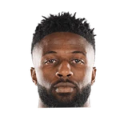

Serena Winters:Luke Walton on @David Nwaba:
“It doesn’t seem like he cares about anything other than playing defense and winning.”


Every quote from Luke Walton about David Nwaba in the archive, newest first. Each one links to its original source.
Serena Winters:Luke Walton on @David Nwaba:
“It doesn’t seem like he cares about anything other than playing defense and winning.”
“Some of them aren’t available right now. (Nwaba’s) been good. But we have to decide if we want to wait or look at someone else.”